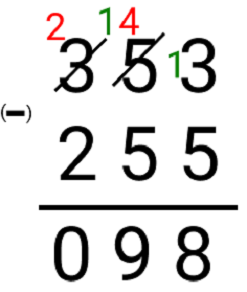
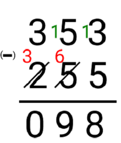

Subtração
Subtração - Regras dos Sinais:
A subtração é uma das quatro operações fundamentais da aritmética. Consiste em subtrair dois ou mais números tendo outro número como resultado. O sinal indicativo da subtração é o “sinal de menos” (–). Os números antes do sinal de igual são chamados minuendo e subtraendo. O valor após o sinal de igualdade é chamado de diferença ou resto.
Exemplo: 4 – 1 = 3:
O número 4 é o minuendo, o 1 é o subtraendo e o 3 a diferença ou resto. Então, como deve ser lido? Assim: quanto teríamos de 4 se tirássemos 1? O resultado é a diferença, ou seja, o resultado após o que tiramos. E a diferença será 3. Cuidado! Na subtração, trocar a ordem em que os valores são subtraídos tem resultado diferente. Que nesse caso será um valor com sinal trocado.
Exemplos: 4 – 1 = 3 e 1 – 4 = -3
Propriedades da subtração:
Veja as propriedades da subtração que fazem toda a diferença na resolução dos cálculos.
Fechamento: A diferença de dois ou mais números reais tem como resultado um número real. Ou seja, se fazermos a diferença entre dois números do conjunto dos números reais, a diferença entre esses números também será um número do conjunto dos reais.
Elemento neutro: Não existe elemento neutro na subtração.
Anulação: Quando o minuendo for igual ao subtraendo tem como resultado da diferença o 0 (zero).
Exemplos: 4 – 4 = 0Módulo de um número: Para entendermos as operações envolvendo a diferença entre números inteiros com sinais diferentes, devemos entender o que significa o módulo de um número real.
Exemplo:
O módulo do número +3 é representado por |+3| e é igual 3.
O módulo de |-3| é 3.
O módulo de |-1| é 1
Regras de operação da subtração:
Sinais iguais: soma e conserva o sinal.
Sinais diferentes: subtrai e conserva o sinal do maior número (maior módulo).
Exemplos de subtração sem parênteses:
–10 + 1 = – 9 (Sinais diferentes: faz a diferença e conserva o sinal do maior número);
+10 – 1 = + 9 (Sinais diferentes: faz a diferença e conserva o sinal do maior número);
–1 – 1 = – 2 (Sinais iguais: soma e conserva o sinal).
Exemplos de subtração com parênteses:
Nesse caso é preciso entender o jogo dos sinais para eliminar os parênteses.
Exemplo:
⦁ +( – ) = –
⦁ –( + ) = –
⦁ +( + ) = +
⦁ –( – ) = +Veja com funciona na prática:
⦁ ( + 4 ) + ( – 2 ) = + 4 – 2 = + 2
⦁ ( – 4 ) – ( + 2 ) = – 4 – 2 = – 6
⦁ ( + 4 ) + ( + 2 ) = + 4 + 2 = + 6
⦁ ( + 4 ) – ( – 2 ) = + 4 + 2 = + 6
Métodos para resolver manualmente:
Apresentaremos agora dois métodos para não errar o cálculo durante a resolução de contas feitas a mão.
E o empresta 1 da subtração?
Quando subtraímos valores de dois ou mais dígitos manualmente na subtração, o valor a ser subtraído (minuendo) pode ser menor que o subtraendo. Dessa forma, deve-se pegar emprestado ao número vizinho. Veja um exemplo:

Como não podemos subtrair 3 de 5, neste caso, “pegamos 1 (em verde) emprestado” do 5 que será descontado e vira 4 (em vermelho), assim teremos 13 – 5 = 8. Como o 5 emprestou 1 ele virou 4 (em vermelho), 4 não pode subtrair 5, pois é menor, então pegamos 1 (em verde) emprestado do 3. Agora temos 14 – 5 = 9. O 3 emprestou 1 (em verde) para o 4, virou 2 (em vermelho) e 2 – 2 = 0
E o soma 1 da subtração?
Existe outra regra que pode ser mais fácil. Ao contrário do empresta 1, somaremos 1 no número de baixo. Vamos resolver esse mesmo exemplo para ficar mais claro.

Nesse exemplo, ao contrário de emprestarmos 1 do número vizinho, somaremos 1 no número de baixo.
Não podemos subtrair 3 de 5, então colocamos 1 (em verde) normalmente e ele vira 13, 13 – 5 = 8. Feito isso, no número de baixo, à esquerda, somaremos 1, temos 5 e ele vira 6 (em vermelho). Não podemos subtrair 5 por 6, pois é menor. Então, colocamos 1 (em verde), vira 15, e subtraímos 15 – 6 = 9. No número de baixo temos 2, somamos 1 e ele vira 3 (em vermelho). Assim, 3 – 3 = 0.
Perceba que encontramos o mesmo resultado da primeira regra. Esse método parece ser mais fácil. Dessa forma, fica ao critério de cada aluno seguir o método desejado.
Referência: https://matematicabasica.net/subtracao/
Vídeo Explicativo:
Referência: https://www.youtube.com/watch?v=e78_5WIssSU